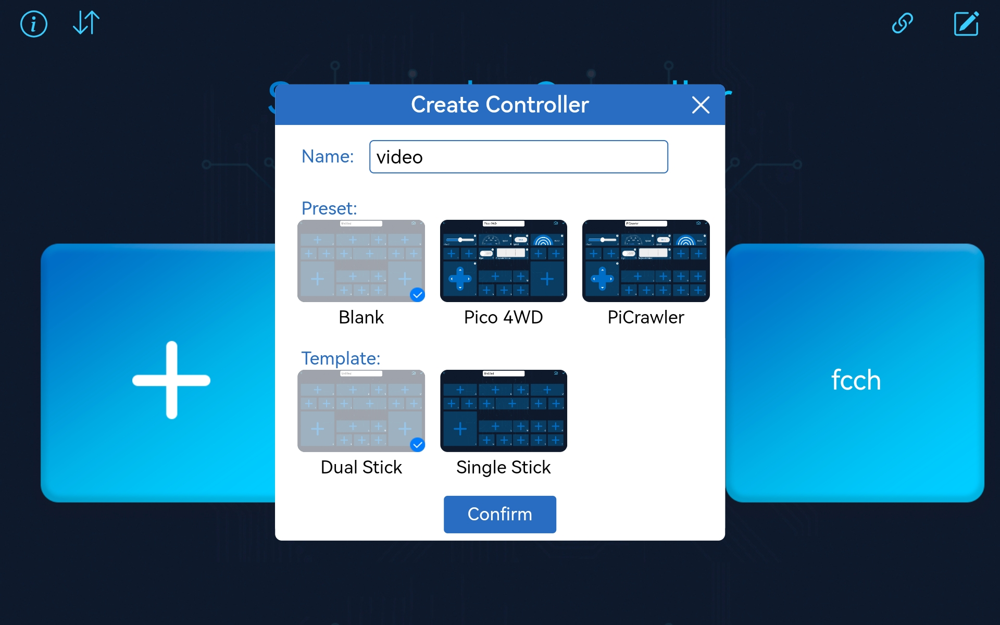
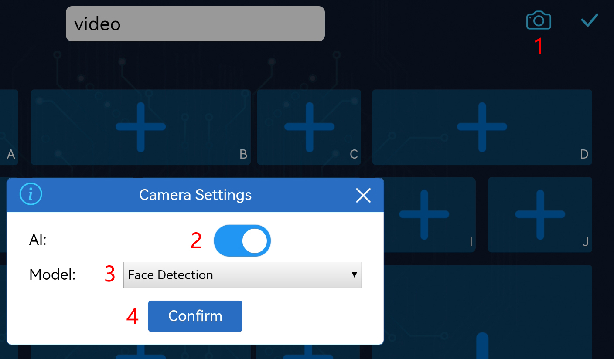
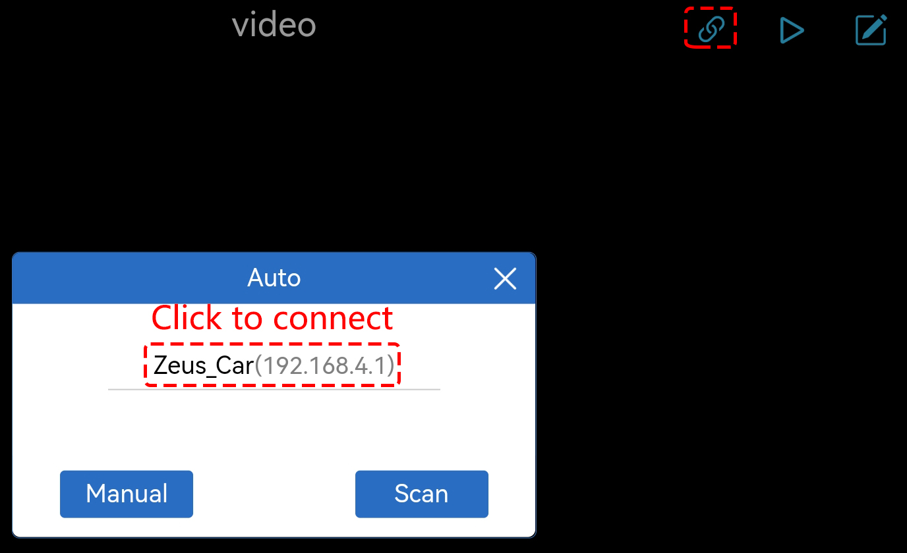
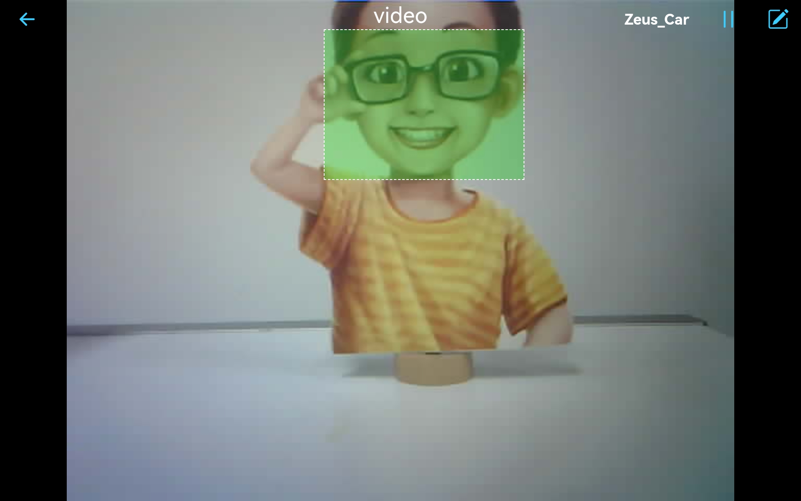
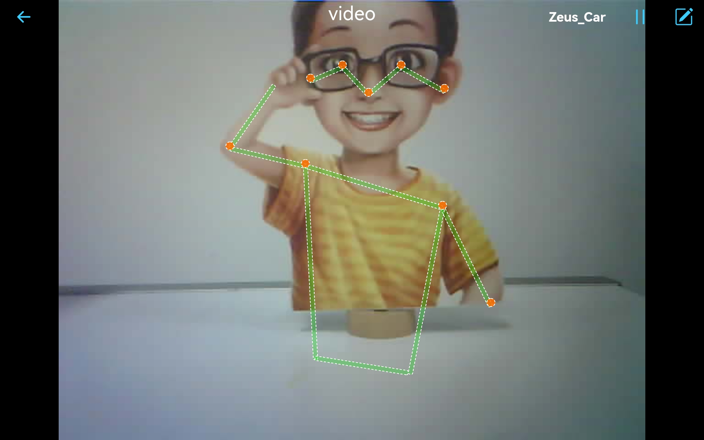

Note
こんにちは、SunFounderのRaspberry Pi & Arduino & ESP32愛好家コミュニティへようこそ！Facebook上でRaspberry Pi、Arduino、ESP32についてもっと深く掘り下げ、他の愛好家と交流しましょう。
参加する理由は？
エキスパートサポート：コミュニティやチームの助けを借りて、販売後の問題や技術的な課題を解決します。
学び＆共有：ヒントやチュートリアルを交換してスキルを向上させましょう。
独占的なプレビュー：新製品の発表や先行プレビューに早期アクセスしましょう。
特別割引：最新製品の独占割引をお楽しみください。
祭りのプロモーションとギフト：ギフトや祝日のプロモーションに参加しましょう。
👉 私たちと一緒に探索し、創造する準備はできていますか？[ここ]をクリックして今すぐ参加しましょう！
16. APPからのAI検出
このプロジェクトでは、SunFounder Controllerというアプリを使用して、リアルタイムのビデオストリーミングを表示し、モバイルデバイス上でのAI検出機能、例えば顔や姿勢の検出を使用します。
SunFounder Controllerは、ユーザーがロボットやIoTプラットフォームを制御するためのコントローラーをカスタマイズできるアプリケーションです。このアプリには、ボタン、ジョイスティック、ゲージ、レーダーなど、11種類の表示と制御ウィジェットが統合されています。コントローラーページにはA〜Qの17のエリアがあり、異なるウィジェットを配置して独自のコントローラーをカスタマイズできます。
それでは、このアプリの使い方を簡単に見てみましょう。
やり方は？
ESP32-CAMとArduinoボードは、同じRX（受信）およびTX（送信）ピンを共有しています。そのため、コードをアップロードするときは、まずESP32-CAMを切断して、競合や潜在的な問題を回避する必要があります。

zeus-car-main\examples\16_ai_detection_from_appのパスの下で16_ai_detection_from_app.inoファイルを開きます。コードが正常にアップロードされた後、ESP32-CAMを挿し、その後電源スイッチをONにスライドしてZeus Carを起動することができます。

アップロードスイッチをRunの方向（この図では右側）に切り替えて、ESP32 CAMを起動します。

リセットボタンを押して、Arduinoボードのプログラムを再度実行します。

これで、モバイルデバイスに SunFounder Controller を APP Store(iOS) または Google Play(Android) からインストールしてください。
Zeus_CarWLANに接続します。携帯電話（タブレット）のWLANで
Zeus_Carを見つけ、パスワード12345678を入力して接続します。

デフォルトの接続モードはAPモードです。そのため、接続後、このWLANネットワークにインターネットアクセスがないというプロンプトが表示されます。続行するように選択してください。

次に、APPを開き、コントローラーを作成します。
SunFounder Controllerでコントローラーを追加するには、 + アイコンをクリックします。

Blank と Dual Stick テンプレートを選択し、名前を付けます。
コントローラーの中にいるので、 アイコンをクリックして、AI検出機能を有効にします。Face DetectionとPose Detectionの両方のオプションが表示されます。
 ボタンをクリックして、すべての設定を保存します。ウィジェットが選択されていないため、画面は完全に黒くなります。
ボタンをクリックして、すべての設定を保存します。ウィジェットが選択されていないため、画面は完全に黒くなります。次に、
 ボタンを使用して、Zeus Carをデバイスに接続します。数秒待ってから
ボタンを使用して、Zeus Carをデバイスに接続します。数秒待ってから Zeus_Car(IP)が表示されるので、それをクリックして接続します。Note
Wi-Fiが
Zeus_Carに接続されていることを確認してください。長い間上記のメッセージが表示されない場合は、特に注意が必要です。
コントローラーを実行します。
「正常に接続されました」というメッセージが表示されたら、
 ボタンをクリックすると、カメラの映像がアプリに表示されます。
ボタンをクリックすると、カメラの映像がアプリに表示されます。Face Detectionがオンになっている場合、画面に表示される顔は枠で囲まれます。
Pose Detectionがオンになっている場合、姿勢が描写されます。
Note
別のAI検出に切り替えたい場合は、
 アイコンをクリックして、上記の手順を繰り返すことができます。
アイコンをクリックして、上記の手順を繰り返すことができます。
{kind=link}